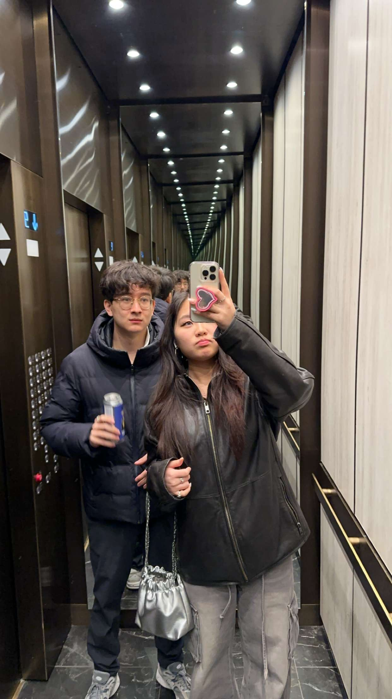
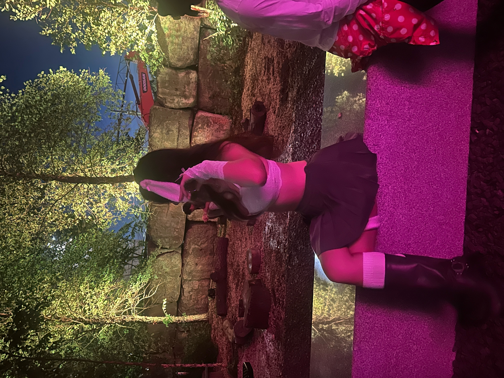
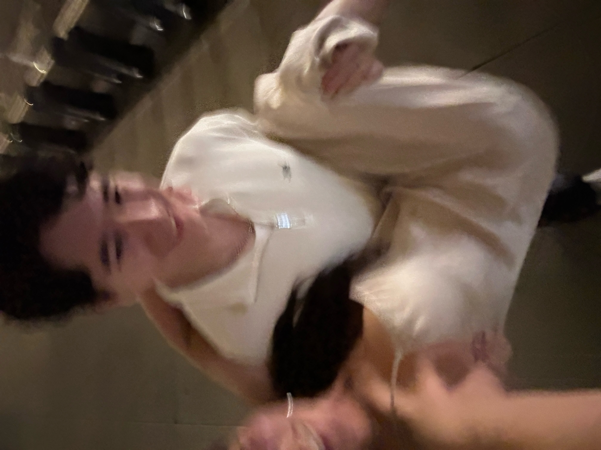
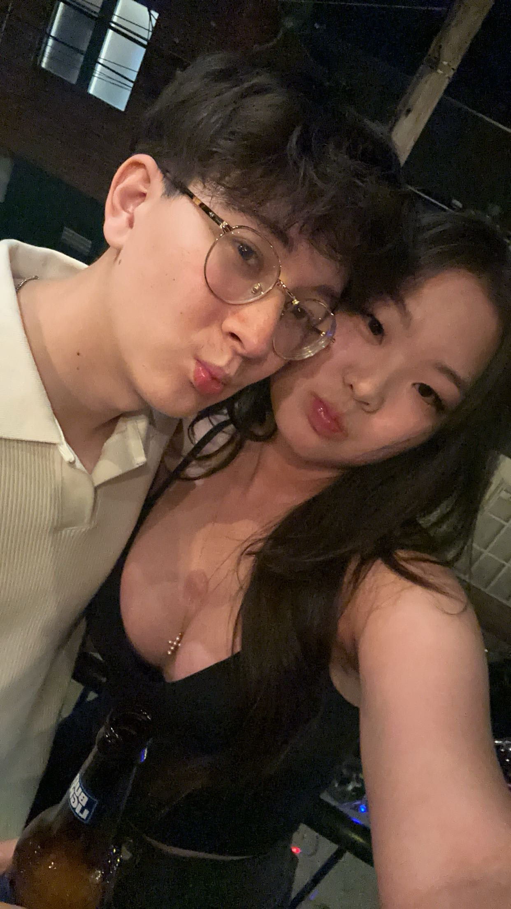
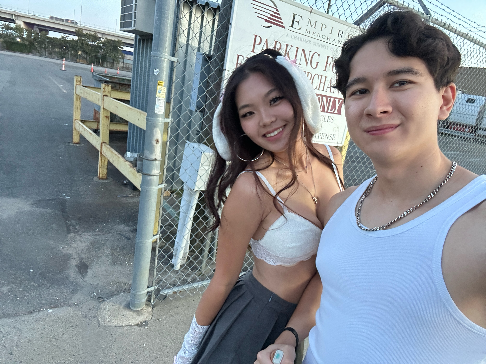
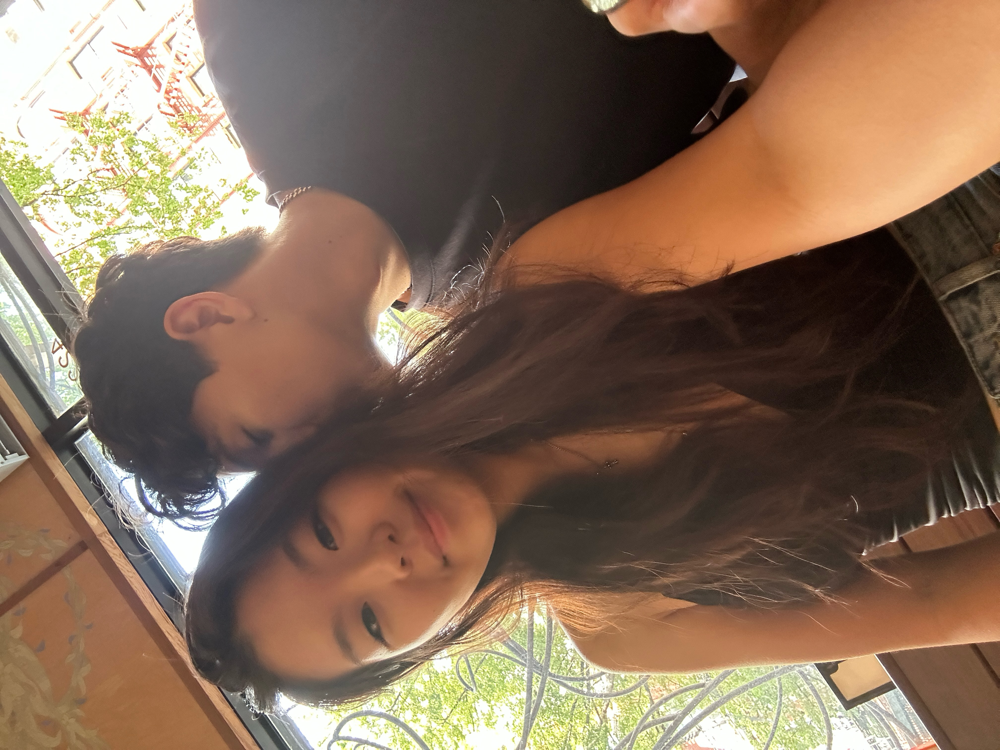
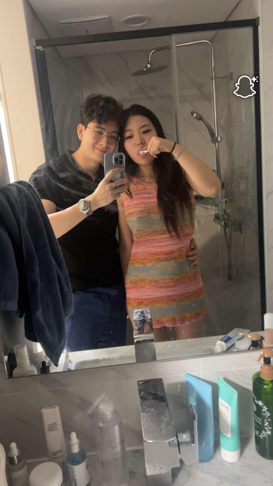
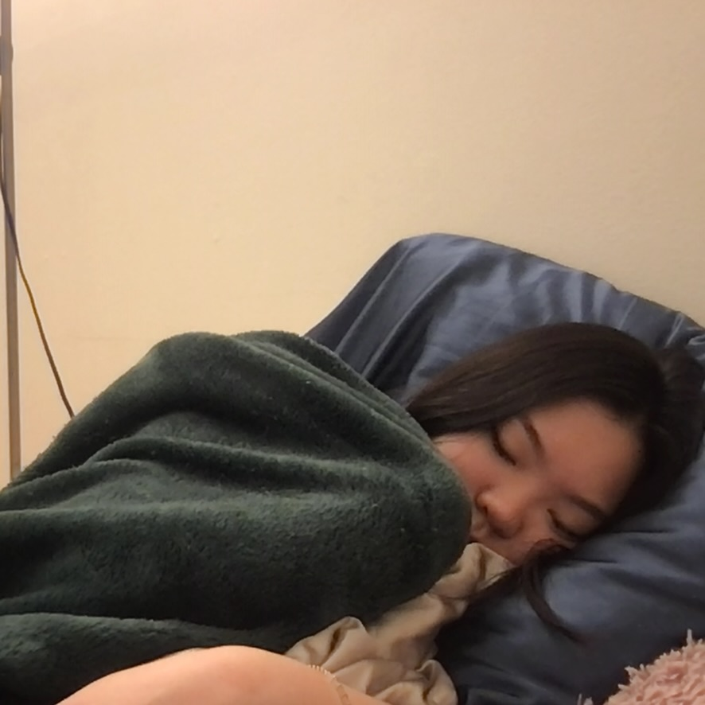

10/22
Looking back on the past weekend, I had so much fun and was genuinely really happy. Just thinking about it brings me so much joy and a big smile to my face at work. Thank you so much for the great memories, even though the time was short 😊😊
A collection of my thoughts about you over the last two months 💞








Looking back on the past weekend, I had so much fun and was genuinely really happy. Just thinking about it brings me so much joy and a big smile to my face at work. Thank you so much for the great memories, even though the time was short 😊😊
I miss Eujinnnnn—wanna text her but she’s my wifey, I love her.
I miss you so much. I feel so bad, I just wanna cuddle you. This is so bad, I’m so drunk.
Eujin, you’re my wifey. I love you.
Now that I’m sober, I realize that all people really want is a partner who loves them endlessly—someone you have compassion, compatibility, and chemistry with. And I truly see that Euj and I have that. I think I just needed time to open my heart again, to be more hopeful, and to become emotionally available and vulnerable so I can give her my all again. Seeing her TikToks shows how much love she has. The LDR one was so cute—it showed how much effort we’ve both put in, and I want to get to a mindset where I’m fully ready and willing to do that for her again 😊😊
Idk if this is cringe or not, but I legit watch the TikTok Eujin made of us at least 5 times a day lolll. It’s so cute, and I hope one day I can tell her that in person 😊😊. Anyways, I have so much love for this girl, and I really want us to go the distance ❤️
I hope one day I can show her these notes because she randomly pops into my head during the day, and it makes me sooo happy. I feel really lucky to have someone in this world who loves me as much as I love them—it’s the best feeling. I honestly can’t wait until we can get back together and build an extremely healthy and trusting relationship ❤️❤️❤️
Halloween! Omg idk why but I kept watching the TikTok today lolll and looking at old photos. I really hope next year we can be together and do matching costumes!! I hope Eujin has fun tonight or whatever she’s doing—but not too much fun 😒😒😒. Anyways, I can’t wait until I see her again ❤️
Lowkey seeing so many couples today made me a bit sad, but also it’s funny how people keep saying, “Yo Ryan, this person is into you, go talk to them,” and I’m just like nah. I don’t want anyone else. There’s only one person I want to give my effort to, and she’s not with me right now. Hopefully soon. She’s my home 😊😊.
I miss her so much. I want to call her but I don’t know if it’s good for us, since maybe having some time with no contact is best. But I miss her—I want to see her, I want to hear her voice. Ughhh I’m such a simp lol. Should I call? Idk idk idk. I want to so bad. But she’s probably out anyways, and giving each other more time is probably best. Even though I really, REALLY want to call 😭😭😭😭
Played a lot of tennis today—def wanna play more haha. I really want to play doubles with Euj in NYC or anywhere honestly. I love tennis and think it would be so fun and so cute to see how our teamwork is, especially since we’re both competitive haha.
Walking to work today had me imagining how cute it would be to do that with Euj in the future. It would be so cute to walk to work together and eventually live together. Omg I’m so delusional since we’re not even talking rn 🥲.
I was missing her and wanted to watch the Fred x Pea videos but she removed them all idk why. I’m stressed—I hope she’s okay. What if she’s upset or moving on? I need to stay positive but it’s hard bc I don’t know what she’s thinking 😭😭😭. I added “I miss you” to the shared note and she saw it but didn’t say anything… what does that even mean 😢 maybe she doesn’t wanna say anything right now. Idk. I’m overthinking.
I need to stay strong. I really want to pick up the phone and call her or text her, but even if it feels good in the short term, I know that if I want what’s best for both of us—and for things to work with zero doubts or resentment—I have to deal with these emotions of missing her, sadness, and uncertainty. In a way, this time apart will build up trust for both of us if we do end up getting back together 🤞🤞
Wow today was so stressful—I’ve never felt so depressed or drained at work. I just wanted to curl into a ball and do nothing. I don’t even have words. I just wish in the future I have someone I can reach out to for comfort during days like this. My grandma won’t get it, my mom will say “just work harder,” but I’m trying. I just have so much pressure and it’s hard 😭. I hope Euj is doing good and having zero stress 😊.
She added to the note and I’m actually about to cry. This day has just been so overwhelming 😭😭😭
Yesterday was rough but today was definitely better. Seeing Euj add to the note helped me get through the day. I’ll stay strong and hopefully this next bit of time passes quickly 😊. I really want to respond in the note with “ok, I love you,” but it’s okay—I’ll tell her that when I see her again.
Omg I’m cursed. Rough week last week and now I’m sick this week :((( I hope Euj is doing good and staying warm. If it’s freezing today in NYC, it must be even colder in Ithaca, so I hope she’s doing okay.
I’ve been focused on work and honestly haven’t been overthinking as much. There’s no point worrying about things I can’t control. I just really missed her, which is why I added to the note (maybe it would’ve been better to wait, idk). But it was relieving to hear that she misses me too. I’m on a cabin trip with friends and it’s such a cute potential future getaway—would love to do one with her. There’s tennis courts, hot tubs, and cozy vibes ❤️❤️❤️
Found so many cute songs today while listening to random stuff at work. Can’t wait to add them to our shared playlist!! Also, to Euj when you’re reading this: false. I love you SOOOOO MUCH—def more than you love me 🤣😎😎
I was thinking about it a lot today. A big part of me wants to text Euj right now and say I’m ready, but even though my heart wants that, it’s probably not the smartest move. We said two months, and I think we should stick to that—to make sure we start from a place with no grudges and a healthy mindset. I think I’ll reach out mid-December when she’s done with finals because I don’t want to interrupt her studying. Ugh it’s so hard when you love someone so much and just want to talk to them.
This week I’ve been reflecting a lot. I think I’ve finally reached a point where I can accept and move on from the past hurt. I want to focus on the future and develop a strong, loving relationship with Eujin. I’m ready to move past the negative emotions. I think this time apart was really good for us and I hope it brings us back together stronger than ever. It still feels so weird that we aren’t talking :(
Thanksgiving day !!! To Euj: I wanted to say I am so thankful for the time we spent together and all the amazing happy memories that I got to share with you. You are someone who I am lucky to say I can love with my whole heart and I feel that you love me just as much and I can’t wait for all the amazing future memories we can make ❤️❤️❤️
first snow of the year today hope euj was able to go outside and play a bit hopefully not too much work haha 😆. After work I had team dinner and new person on my team asked me if I’m dating anyone and I was like not yet but hopefully soon, and I reallyyyy hope I can say yes to that question very very soon ❤️❤️❤️. I love you plenty euj and I’m going to reach out soon 😊.
Spent some time this week after work to create this page for Euj, to Euj: I hope you appreciate the website I made (took so long to get the floating hearts to work lolll), but making something that is thoughtful and that I can pour my heart into is something I really enjoy knowing it will bring a biggg smile on your face 💖💖
Oh man the weekend and this week is rough grandma was not doing well and now I randomly have the flu so I am home for the next few days but at least that means I can dedicate more time to improving Euj website!! Cornell must be colder and I think Euj is in finals week rn so I hope she aces themmm and also stays warm we can't both be sick haha 🤣🤣
Yesterday finally marked 2 months and I felt ready to try again with Euj, I sent a text and we are going to talk later tonight, I am pretty excited since I really want her to be back in my life and im ready now :)
Its been a week since we have begun talking again and I feel really really happy, what makes this time different to me is that it seems we are both willing to give it our all and put in effort which is something that lacked in the past. We have had some really deep convos and I feel closer to Euj since I ultimately want to be able to understand her to a really deep level so I can love her the way she feels loved most and also make her feel cared for, appreciated and fully supported. I am so excited to spend more time with her since shes the only person I want to give my all to and put in so much effort for and I hope one day in a future I can call her my girlfriend again